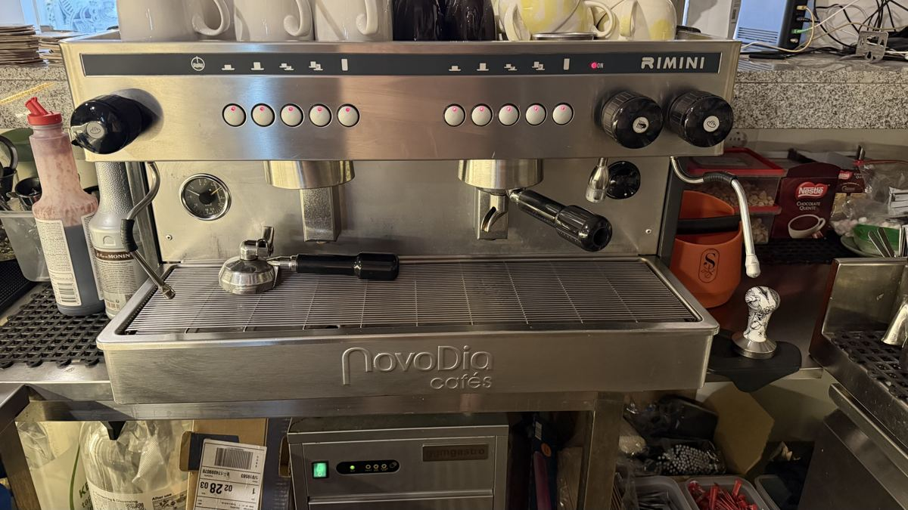

CateringRestauracaoHoReCa / кухняCommercial 2-Group Espresso MachineMaquina de Cafe Profissional de 2 GruposПрофесійна еспресо-машина на 2 групи
Professional 2-group espresso coffee machine in stainless steel (NovoDia / Rimini). Twin brew groups, steam and hot-water wands, cup warmer on top and pressure gauge - built for the volume of a busy cafe or bar.Maquina de cafe expresso profissional de 2 grupos em aco inoxidavel (NovoDia / Rimini). Dois grupos de extracao, lancas de vapor e agua quente, aquecedor de chavenas no topo e manometro - feita para o volume de um cafe ou bar movimentado.Кавомашина з нержавіючої сталі (NovoDia / Rimini): 2 групи, парова та водяна трубки, підігрів чашок, манометр — для завантаженого кафе чи бару.
Used, workingUsado, a funcionarВживаний, робочий
€100
€285-900 (mostly 450-800)
€1650 (GGM Gastro (STEMF2))